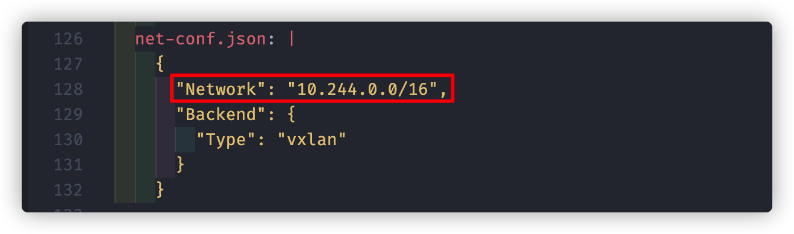

虽然网上有大量从零搭建 K8S 的文章，但大都针对老版本，若直接照搬去安装最新的 1.20 版本会遇到一堆问题。故此将我的安装步骤记录下来，希望能为读者提供 copy and paste 式的集群搭建帮助。
1. 部署准备工作
部署最小化 K8S 集群：master + node1 + node2
Ubuntu 是一款基于 Debian Linux 的以桌面应用为主的操作系统，内容涵盖文字处理、电子邮件、软件开发工具和 Web 服务等，可供用户免费下载、使用和分享。
➜ vgs
Current machine states:
master running (virtualbox)
node1 running (virtualbox)
node2 running (virtualbox)1.1 基础环境信息
- 设置系统主机名以及 Host 文件各节点之间的相互解析
- 使用这个的
Vagrantfile启动的三节点服务已经配置好了 - 以下使用
master节点进行演示查看，其他节点操作均一致
- 使用这个的
# hostnamectl
vagrant@k8s-master:~$ hostnamectl
Static hostname: k8s-master
# hosts
vagrant@k8s-master:~$ cat /etc/hosts
127.0.0.1 localhost
127.0.1.1 vagrant.vm vagrant
192.168.30.30 k8s-master
192.168.30.31 k8s-node1
192.168.30.32 k8s-node2
# ping
vagrant@k8s-master:~$ ping k8s-node1
PING k8s-node1 (192.168.30.31) 56(84) bytes of data.
64 bytes from k8s-node1 (192.168.30.31): icmp_seq=1 ttl=64 time=0.689 ms1.2 阿里源配置
- 配置 Ubuntu 的阿里源来加速安装速度
# 登录服务器
➜ vgssh master/node1/nod2
Welcome to Ubuntu 18.04.2 LTS (GNU/Linux 4.15.0-50-generic x86_64)
# 设置阿里云Ubuntu镜像
$ sudo cp /etc/apt/sources.list{,.bak}
$ sudo vim /etc/apt/sources.list
# 配置kubeadm的阿里云镜像源
$ sudo vim /etc/apt/sources.list
deb https://mirrors.aliyun.com/kubernetes/apt kubernetes-xenial main
$ sudo gpg --keyserver keyserver.ubuntu.com --recv-keys BA07F4FB
$ sudo gpg --export --armor BA07F4FB | sudo apt-key add -
# 配置docker安装
$ curl -fsSL https://download.docker.com/linux/ubuntu/gpg | sudo apt-key add -
$ sudo apt-key fingerprint 0EBFCD88
$ sudo vim /etc/apt/sources.list
deb [arch=amd64] https://download.docker.com/linux/ubuntu bionic stable
# 更新仓库
$ sudo apt update
$ sudo apt dist-upgrade1.3 基础工具安装
- 部署阶段的基础工具安装
- 基础组件
docker - 部署工具
kubeadm - 路由规则
ipvsadm - 时间同步
ntp
- 基础组件
# 基础工具安装
$ sudo apt install -y \
docker-ce docker-ce-cli containerd.io \
kubeadm ipvsadm \
ntp ntpdate \
nginx supervisor
# 将当前普通用户加入docker组(需重新登录)
$ sudo usermod -a -G docker $USER
# 服务启用
$ sudo systemctl enable docker.service
$ sudo systemctl start docker.service
$ sudo systemctl enable kubelet.service
$ sudo systemctl start kubelet.service1.4 操作系统配置
- 操作系统相关配置
- 关闭缓存
- 配置内核参数
- 调整系统时区
- 升级内核版本(默认为
4.15.0的版本)
# 关闭缓存
$ sudo swapoff -a
# 为K8S来调整内核参数
$ sudo touch /etc/sysctl.d/kubernetes.conf
$ sudo cat > /etc/sysctl.d/kubernetes.conf <<EOF
net.bridge.bridge-nf-call-iptables = 1 # 开启网桥模式(必须)
net.bridge.bridge-nf-call-ip6tables = 1 # 开启网桥模式(必须)
net.ipv6.conf.all.disable_ipv6 = 1 # 关闭IPv6协议(必须)
net.ipv4.ip_forward = 1 # 转发模式(默认开启)
vm.panic_on_oom=0 # 开启OOM(默认开启)
vm.swappiness = 0 # 禁止使用swap空间
vm.overcommit_memory=1 # 不检查物理内存是否够用
fs.inotify.max_user_instances=8192
fs.inotify.max_user_watches=1048576
fs.file-max = 52706963 # 设置文件句柄数量
fs.nr_open = 52706963 # 设置文件的最大打开数量
net.netfilter.nf_conntrack_max = 2310720
EOF
# 查看系统内核参数的方式
$ sudo sysctl -a | grep xxx
# 使内核参数配置文件生效
$ sudo sysctl -p /etc/sysctl.d/kubernetes.conf# 设置系统时区为中国/上海
$ sudo timedatectl set-timezone Asia/Shanghai
# 将当前的UTC时间写入硬件时钟
$ sudo timedatectl set-local-rtc 01.5 开启 ipvs 服务
- 开启 ipvs 服务
kube-proxy开启ipvs的前置条件
# 载入指定的个别模块
$ modprobe br_netfilter
# 修改配置
$ cat > /etc/sysconfig/modules/ipvs.modules <<EOF
#!/bin/bash
modprobe -- ip_vs
modprobe -- ip_vs_rr
modprobe -- ip_vs_wrr
modprobe -- ip_vs_sh
modprobe -- nf_conntrack_ipv
EOF
# 加载配置
$ chmod 755 /etc/sysconfig/modules/ipvs.modules \
&& bash /etc/sysconfig/modules/ipvs.modules \
&& lsmod | grep -e ip_vs -e nf_conntrack_ipv2. 部署 Master 节点
节点最低配置:
2C+2G内存；从节点资源尽量充足
kubeadm 工具的 init 命令，即可初始化以单节点部署的 master。为了避免翻墙，这里可以使用阿里云的谷歌源来代替。在执行 kubeadm 部署命令的时候，指定对应地址即可。当然，可以将其加入本地的镜像库之中，更易维护。
# 登录服务器
➜ vgssh master
Welcome to Ubuntu 18.04.2 LTS (GNU/Linux 4.15.0-50-generic x86_64)
# 部署节点(命令行)
# 注意pod和service的地址需要不同(否则会报错)
$ sudo kubeadm init \
--kubernetes-version=1.20.2 \
--image-repository registry.aliyuncs.com/google_containers \
--apiserver-advertise-address=192.168.30.30 \
--pod-network-cidr=10.244.0.0/16 \
--service-cidr=10.245.0.0/16
# 部署镜像配置(配置文件)
$ sudo kubeadm init --config ./kubeadm-config.yaml
Your Kubernetes control-plane has initialized successfully!# 查看IP段是否生效(iptable)
$ ip route show
10.244.0.0/24 dev cni0 proto kernel scope link src 10.244.0.1
10.244.1.0/24 via 10.244.1.0 dev flannel.1 onlink
10.244.2.0/24 via 10.244.2.0 dev flannel.1 onlink
# # 查看IP段是否生效(ipvs)
$ ipvsadm -L -n
IP Virtual Server version 1.2.1 (size=4096)
Prot LocalAddress:Port Scheduler Flags
-> RemoteAddress:Port Forward Weight ActiveConn InActConn- 配置文件定义
- 接口使用了
v1beta2版本 - 配置主节点
IP地址为192.168.30.30 - 为
flannel分配的是10.244.0.0/16网段 - 选择的
kubernetes是当前最新的1.20.2版本 - 加入了
controllerManager的水平扩容功能
- 接口使用了
# kubeadm-config.yaml
# sudo kubeadm config print init-defaults > kubeadm-config.yaml
apiVersion: kubeadm.k8s.io/v1beta2
imageRepository: registry.aliyuncs.com/google_containers
kind: ClusterConfiguration
kubernetesVersion: v1.20.2
apiServer:
extraArgs:
advertise-address: 192.168.30.30
networking:
podSubnet: 10.244.0.0/16
controllerManager:
ExtraArgs:
horizontal-pod-autoscaler-use-rest-clients: "true"
horizontal-pod-autoscaler-sync-period: "10s"
node-monitor-grace-period: "10s"- 执行成功之后会输出如下信息，需要按照如下步骤操作下
- 第一步 在
kubectl默认控制和操作集群节点的时候，需要使用到CA的密钥，传输过程是通过TLS协议保障通讯的安全性。通过下面3行命令拷贝密钥信息到当前用户家目录下，这样kubectl执行时会首先访问.kube目录，使用这些授权信息访问集群。 - 第二步 之后添加
worker节点时，要通过token才能保障安全性。因此，先把显示的这行命令保存下来，以备后续使用会用到。
- 第一步 在
# master setting step one
To start cluster, you need to run the following as a regular user:
mkdir -p $HOME/.kube
sudo cp -i /etc/kubernetes/admin.conf $HOME/.kube/config
sudo chown $(id -u):$(id -g) $HOME/.kube/config
Alternatively, if you are the root user, you can run:
export KUBECONFIG=/etc/kubernetes/admin.conf
# master setting step two
You should now deploy a pod network to the cluster.
Run "kubectl apply -f [podnetwork].yaml" with one of the options listed:
https://kubernetes.io/docs/concepts/cluster-administration/addons/
Join any number of worker nodes by running the following on each as root:
kubeadm join 192.168.30.30:6443 \
--token lebbdi.p9lzoy2a16tmr6hq \
--discovery-token-ca-cert-hash \
sha256:6c79fd83825d7b2b0c3bed9e10c428acf8ffcd615a1d7b258e9b500848c20cae- 将子节点加入主节点中
$ kubectl get nodes
NAME STATUS ROLES AGE VERSION
k8s-master NotReady control-plane,master 62m v1.20.2
k8s-node1 NotReady <none> 82m v1.20.2
k8s-node2 NotReady <none> 82m v1.20.2# 查看token令牌
$ sudo kubeadm token list
# 生成token令牌
$ sudo kubeadm token create
# 忘记sha编码
$ openssl x509 -pubkey -in /etc/kubernetes/pki/ca.crt \
| openssl rsa -pubin -outform der 2>/dev/null \
| openssl dgst -sha256 -hex | sed 's/^.* //'# 生成一个新的 token 令牌(比上面的方便)
$ kubeadm token generate
# 直接生成 join 命令(比上面的方便)
$ kubeadm token create <token_generate> --print-join-command --ttl=0- 执行完成之后可以通过如下命令，查看主节点信息
- 默认生成四个命名空间
default、kube-system、kube-public、kube-node-lease
- 部署的核心服务有以下几个(
kube-system)coredns、etcdkube-apiserver、kube-schedulerkube-controller-manager、kube-controller-manager
- 此时
master并没有ready状态(需要安装网络插件)- 下一章节中，我们将安装
flannel这个网络插件
- 下一章节中，我们将安装
- 默认生成四个命名空间
# 命名空间
$ kubectl get namespace
NAME STATUS AGE
default Active 19m
kube-node-lease Active 19m
kube-public Active 19m
kube-system Active 19m
# 核心服务
$ kubectl get pod -n kube-system
NAME READY STATUS RESTARTS AGE
coredns-7f89b7bc75-bh42f 1/1 Running 0 19m
coredns-7f89b7bc75-dvzpl 1/1 Running 0 19m
etcd-k8s-master 1/1 Running 0 19m
kube-apiserver-k8s-master 1/1 Running 0 19m
kube-controller-manager-k8s-master 1/1 Running 0 19m
kube-proxy-5rlpv 1/1 Running 0 19m
kube-scheduler-k8s-master 1/1 Running 0 19m3. 部署 flannel 网络
网络服务用于管理 K8S 集群中的服务网络
flannel 网络需要指定 IP 地址段，即上一步中通过编排文件设置的 10.244.0.0/16。其实可以通过 flannel 官方和 HELM 工具直接部署服务，但是原地址是需要搭梯子的。所以，可以将其内容保存在如下配置文件中，修改对应镜像地址。
# 部署flannel服务
# 1.修改镜像地址(如果下载不了的话)
# 2.修改Network为--pod-network-cidr的参数IP段
$ kubectl apply -f ./kube-flannel.yml
# 如果部署出现问题可通过如下命令查看日志
$ kubectl logs kube-flannel-ds-6xxs5 --namespace=kube-system
$ kubectl describe pod kube-flannel-ds-6xxs5 --namespace=kube-system
- 如果使用当中存在问题的，可以参考 官方的问题手册。
- 因为我们这里使用的是
Vagrant虚拟出来的机器进行K8S的部署，但是在运行对应yaml配置的时候，会报错。通过查看日志发现是因为默认绑定的是虚拟机上面的eth0这块网卡，而这块网卡是Vagrant使用的，我们应该绑定的是eth1才对。 Vagrant通常为所有VM分配两个接口，第一个为所有主机分配的IP地址为10.0.2.15，用于获得NAT的外部流量。这样会导致flannel部署存在问题。通过官方问题说明，我们可以使用--iface=eth1这个参数选择第二个网卡。- 对应的参数使用方式，可以参考 flannel use –iface=eth1 中的回答自行添加，而这里我直接修改了启动的配置文件，在启动服务的时候通过
args修改了，如下所示。
- 因为我们这里使用的是
$ kubectl get pods -n kube-system
NAME READY STATUS RESTARTS AGE
coredns-7f89b7bc75-bh42f 1/1 Running 0 61m
coredns-7f89b7bc75-dvzpl 1/1 Running 0 61m
etcd-k8s-master 1/1 Running 0 62m
kube-apiserver-k8s-master 1/1 Running 0 62m
kube-controller-manager-k8s-master 1/1 Running 0 62m
kube-flannel-ds-zl148 1/1 Running 0 44s
kube-flannel-ds-ll523 1/1 Running 0 44s
kube-flannel-ds-wpmhw 1/1 Running 0 44s
kube-proxy-5rlpv 1/1 Running 0 61m
kube-scheduler-k8s-master 1/1 Running 0 62m- 配置文件如下所示
---
apiVersion: policy/v1beta1
kind: PodSecurityPolicy
metadata:
name: psp.flannel.unprivileged
annotations:
seccomp.security.alpha.kubernetes.io/allowedProfileNames: docker/default
seccomp.security.alpha.kubernetes.io/defaultProfileName: docker/default
apparmor.security.beta.kubernetes.io/allowedProfileNames: runtime/default
apparmor.security.beta.kubernetes.io/defaultProfileName: runtime/default
spec:
privileged: false
volumes:
- configMap
- secret
- emptyDir
- hostPath
allowedHostPaths:
- pathPrefix: "/etc/cni/net.d"
- pathPrefix: "/etc/kube-flannel"
- pathPrefix: "/run/flannel"
readOnlyRootFilesystem: false
# Users and groups
runAsUser:
rule: RunAsAny
supplementalGroups:
rule: RunAsAny
fsGroup:
rule: RunAsAny
# Privilege Escalation
allowPrivilegeEscalation: false
defaultAllowPrivilegeEscalation: false
# Capabilities
allowedCapabilities: ["NET_ADMIN", "NET_RAW"]
defaultAddCapabilities: []
requiredDropCapabilities: []
# Host namespaces
hostPID: false
hostIPC: false
hostNetwork: true
hostPorts:
- min: 0
max: 65535
# SELinux
seLinux:
# SELinux is unused in CaaSP
rule: "RunAsAny"
---
kind: ClusterRole
apiVersion: rbac.authorization.k8s.io/v1
metadata:
name: flannel
rules:
- apiGroups: ["extensions"]
resources: ["podsecuritypolicies"]
verbs: ["use"]
resourceNames: ["psp.flannel.unprivileged"]
- apiGroups:
- ""
resources:
- pods
verbs:
- get
- apiGroups:
- ""
resources:
- nodes
verbs:
- list
- watch
- apiGroups:
- ""
resources:
- nodes/status
verbs:
- patch
---
kind: ClusterRoleBinding
apiVersion: rbac.authorization.k8s.io/v1
metadata:
name: flannel
roleRef:
apiGroup: rbac.authorization.k8s.io
kind: ClusterRole
name: flannel
subjects:
- kind: ServiceAccount
name: flannel
namespace: kube-system
---
apiVersion: v1
kind: ServiceAccount
metadata:
name: flannel
namespace: kube-system
---
kind: ConfigMap
apiVersion: v1
metadata:
name: kube-flannel-cfg
namespace: kube-system
labels:
tier: node
app: flannel
data:
cni-conf.json: |
{
"name": "cbr0",
"cniVersion": "0.3.1",
"plugins": [
{
"type": "flannel",
"delegate": {
"hairpinMode": true,
"isDefaultGateway": true
}
},
{
"type": "portmap",
"capabilities": {
"portMappings": true
}
}
]
}
net-conf.json: |
{
"Network": "10.244.0.0/16",
"Backend": {
"Type": "vxlan"
}
}
---
apiVersion: apps/v1
kind: DaemonSet
metadata:
name: kube-flannel-ds
namespace: kube-system
labels:
tier: node
app: flannel
spec:
selector:
matchLabels:
app: flannel
template:
metadata:
labels:
tier: node
app: flannel
spec:
affinity:
nodeAffinity:
requiredDuringSchedulingIgnoredDuringExecution:
nodeSelectorTerms:
- matchExpressions:
- key: kubernetes.io/os
operator: In
values:
- linux
hostNetwork: true
priorityClassName: system-node-critical
tolerations:
- operator: Exists
effect: NoSchedule
serviceAccountName: flannel
initContainers:
- name: install-cni
image: quay.io/coreos/flannel:v0.13.1-rc1
command:
- cp
args:
- -f
- /etc/kube-flannel/cni-conf.json
- /etc/cni/net.d/10-flannel.conflist
volumeMounts:
- name: cni
mountPath: /etc/cni/net.d
- name: flannel-cfg
mountPath: /etc/kube-flannel/
containers:
- name: kube-flannel
image: quay.io/coreos/flannel:v0.13.1-rc1
command:
- /opt/bin/flanneld
args:
- --ip-masq
- --kube-subnet-mgr
- --iface=eth1
resources:
requests:
cpu: "100m"
memory: "50Mi"
limits:
cpu: "100m"
memory: "50Mi"
securityContext:
privileged: false
capabilities:
add: ["NET_ADMIN", "NET_RAW"]
env:
- name: POD_NAME
valueFrom:
fieldRef:
fieldPath: metadata.name
- name: POD_NAMESPACE
valueFrom:
fieldRef:
fieldPath: metadata.namespace
volumeMounts:
- name: run
mountPath: /run/flannel
- name: flannel-cfg
mountPath: /etc/kube-flannel/
volumes:
- name: run
hostPath:
path: /run/flannel
- name: cni
hostPath:
path: /etc/cni/net.d
- name: flannel-cfg
configMap:
name: kube-flannel-cfg- 至此集群部署成功！如果有参数错误需要修改，你也可以在
reset后重新init集群。
$ kubectl get nodes
NAME STATUS ROLES AGE VERSION
k8s-master Ready control-plane,master 62m v1.20.2
k8s-node1 Ready control-plane,master 82m v1.20.2
k8s-node2 Ready control-plane,master 82m v1.20.2
# 重启集群
$ sudo kubeadm reset
$ sudo kubeadm init4. 部署 dashboard 服务
以 WEB 页面的可视化 dashboard 来监控集群的状态
这个还是会遇到需要搭梯子下载启动配置文件的问题，下面是对应的下载地址，可以下载之后上传到服务器上面在进行部署。
# 部署flannel服务
$ kubectl apply -f ./kube-dashboard.yaml
# 如果部署出现问题可通过如下命令查看日志
$ kubectl logs \
kubernetes-dashboard-c9fb67ffc-nknpj \
--namespace=kubernetes-dashboard
$ kubectl describe pod \
kubernetes-dashboard-c9fb67ffc-nknpj \
--namespace=kubernetes-dashboard$ kubectl get svc -n kubernetes-dashboard
NAME TYPE CLUSTER-IP EXTERNAL-IP PORT(S) AGE
dashboard-metrics-scraper ClusterIP 10.245.214.11 <none> 8000/TCP 26s
kubernetes-dashboard ClusterIP 10.245.161.146 <none> 443/TCP 26s需要注意的是
dashboard默认不允许外网访问，即使通过kubectl proxy允许外网访问。但dashboard又只允许HTTPS访问，这样kubeadm init时自签名的CA证书是不被浏览器承认的。我采用的方案是
Nginx作为反向代理，使用Lets Encrypt提供的有效证书对外提供服务，再经由proxy_pass指令反向代理到kubectl proxy上，如下所示。此时，本地可经由8888访问到dashboard服务，再通过Nginx访问它。
# 代理(可以使用supervisor)
$ kubectl proxy --accept-hosts='^*$'
$ kubectl proxy --port=8888 --accept-hosts='^*$'
$ kubectl proxy --port=8888 --accept-hosts='k8s.escape.com,k8s.escape.cn,localhost'
# 本地(可以使用nginx)
proxy_pass http://localhost:8001;
proxy_pass http://localhost:8888;
# 测试代理是否正常(默认监听在8001端口上)
$ curl -X GET -L http://localhost:8001
$ curl -X GET -L http://localhost:8888
# 外网访问如下URL地址
https://mydomain/api/v1/namespaces/kubernetes-dashboard/services/https:kubernetes-dashboard:/proxy/#/login- 配置文件整理
nginxsupervisor
# k8s.conf
client_max_body_size 80M;
client_body_buffer_size 128k;
proxy_connect_timeout 600;
proxy_read_timeout 600;
proxy_send_timeout 600;
server {
listen 8080 ssl;
server_name _;
ssl_certificate /etc/kubernetes/pki/ca.crt;
ssl_certificate_key /etc/kubernetes/pki/ca.key;
access_log /var/log/nginx/k8s.access.log;
error_log /var/log/nginx/k8s.error.log error;
location / {
proxy_set_header X-Forwarded-Proto $scheme;
proxy_set_header Host $http_host;
proxy_set_header X-Real-IP $remote_addr;
proxy_pass http://localhost:8001/api/v1/namespaces/kubernetes-dashboard/services/https:kubernetes-dashboard:/proxy/;
}
}# k8s.conf
[program:k8s-master]
command=kubectl proxy --accept-hosts='^*$'
user=vagrant
environment=KUBECONFIG="/home/vagrant/.kube/config"
stopasgroup=true
stopasgroup=true
autostart=true
autorestart=unexpected
stdout_logfile_maxbytes=1MB
stdout_logfile_backups=10
stderr_logfile_maxbytes=1MB
stderr_logfile_backups=10
stderr_logfile=/var/log/supervisor/k8s-stderr.log
stdout_logfile=/var/log/supervisor/k8s-stdout.log- 配置文件如下所示
# Copyright 2017 The Kubernetes Authors.
#
# Licensed under the Apache License, Version 2.0 (the "License");
# you may not use this file except in compliance with the License.
# You may obtain a copy of the License at
#
# http://www.apache.org/licenses/LICENSE-2.0
#
# Unless required by applicable law or agreed to in writing, software
# distributed under the License is distributed on an "AS IS" BASIS,
# WITHOUT WARRANTIES OR CONDITIONS OF ANY KIND, either express or implied.
# See the License for the specific language governing permissions and
# limitations under the License.
apiVersion: v1
kind: Namespace
metadata:
name: kubernetes-dashboard
---
apiVersion: v1
kind: ServiceAccount
metadata:
labels:
k8s-app: kubernetes-dashboard
name: kubernetes-dashboard
namespace: kubernetes-dashboard
---
kind: Service
apiVersion: v1
metadata:
labels:
k8s-app: kubernetes-dashboard
name: kubernetes-dashboard
namespace: kubernetes-dashboard
spec:
ports:
- port: 443
targetPort: 8443
selector:
k8s-app: kubernetes-dashboard
---
apiVersion: v1
kind: Secret
metadata:
labels:
k8s-app: kubernetes-dashboard
name: kubernetes-dashboard-certs
namespace: kubernetes-dashboard
type: Opaque
---
apiVersion: v1
kind: Secret
metadata:
labels:
k8s-app: kubernetes-dashboard
name: kubernetes-dashboard-csrf
namespace: kubernetes-dashboard
type: Opaque
data:
csrf: ""
---
apiVersion: v1
kind: Secret
metadata:
labels:
k8s-app: kubernetes-dashboard
name: kubernetes-dashboard-key-holder
namespace: kubernetes-dashboard
type: Opaque
---
kind: ConfigMap
apiVersion: v1
metadata:
labels:
k8s-app: kubernetes-dashboard
name: kubernetes-dashboard-settings
namespace: kubernetes-dashboard
---
kind: Role
apiVersion: rbac.authorization.k8s.io/v1
metadata:
labels:
k8s-app: kubernetes-dashboard
name: kubernetes-dashboard
namespace: kubernetes-dashboard
rules:
# Allow Dashboard to get, update and delete Dashboard exclusive secrets.
- apiGroups: [""]
resources: ["secrets"]
resourceNames:
[
"kubernetes-dashboard-key-holder",
"kubernetes-dashboard-certs",
"kubernetes-dashboard-csrf",
]
verbs: ["get", "update", "delete"]
# Allow Dashboard to get and update 'kubernetes-dashboard-settings' config map.
- apiGroups: [""]
resources: ["configmaps"]
resourceNames: ["kubernetes-dashboard-settings"]
verbs: ["get", "update"]
# Allow Dashboard to get metrics.
- apiGroups: [""]
resources: ["services"]
resourceNames: ["heapster", "dashboard-metrics-scraper"]
verbs: ["proxy"]
- apiGroups: [""]
resources: ["services/proxy"]
resourceNames:
[
"heapster",
"http:heapster:",
"https:heapster:",
"dashboard-metrics-scraper",
"http:dashboard-metrics-scraper",
]
verbs: ["get"]
---
kind: ClusterRole
apiVersion: rbac.authorization.k8s.io/v1
metadata:
labels:
k8s-app: kubernetes-dashboard
name: kubernetes-dashboard
rules:
# Allow Metrics Scraper to get metrics from the Metrics server
- apiGroups: ["metrics.k8s.io"]
resources: ["pods", "nodes"]
verbs: ["get", "list", "watch"]
---
apiVersion: rbac.authorization.k8s.io/v1
kind: RoleBinding
metadata:
labels:
k8s-app: kubernetes-dashboard
name: kubernetes-dashboard
namespace: kubernetes-dashboard
roleRef:
apiGroup: rbac.authorization.k8s.io
kind: Role
name: kubernetes-dashboard
subjects:
- kind: ServiceAccount
name: kubernetes-dashboard
namespace: kubernetes-dashboard
---
apiVersion: rbac.authorization.k8s.io/v1
kind: ClusterRoleBinding
metadata:
name: kubernetes-dashboard
roleRef:
apiGroup: rbac.authorization.k8s.io
kind: ClusterRole
name: kubernetes-dashboard
subjects:
- kind: ServiceAccount
name: kubernetes-dashboard
namespace: kubernetes-dashboard
---
kind: Deployment
apiVersion: apps/v1
metadata:
labels:
k8s-app: kubernetes-dashboard
name: kubernetes-dashboard
namespace: kubernetes-dashboard
spec:
replicas: 1
revisionHistoryLimit: 10
selector:
matchLabels:
k8s-app: kubernetes-dashboard
template:
metadata:
labels:
k8s-app: kubernetes-dashboard
spec:
containers:
- name: kubernetes-dashboard
image: registry.cn-shanghai.aliyuncs.com/jieee/dashboard:v2.0.4
imagePullPolicy: Always
ports:
- containerPort: 8443
protocol: TCP
args:
- --auto-generate-certificates
- --namespace=kubernetes-dashboard
# Uncomment the following line to manually specify Kubernetes API server Host
# If not specified, Dashboard will attempt to auto discover the API server and connect
# to it. Uncomment only if the default does not work.
# - --apiserver-host=http://my-address:port
volumeMounts:
- name: kubernetes-dashboard-certs
mountPath: /certs
# Create on-disk volume to store exec logs
- mountPath: /tmp
name: tmp-volume
livenessProbe:
httpGet:
scheme: HTTPS
path: /
port: 8443
initialDelaySeconds: 30
timeoutSeconds: 30
securityContext:
allowPrivilegeEscalation: false
readOnlyRootFilesystem: true
runAsUser: 1001
runAsGroup: 2001
volumes:
- name: kubernetes-dashboard-certs
secret:
secretName: kubernetes-dashboard-certs
- name: tmp-volume
emptyDir: {}
serviceAccountName: kubernetes-dashboard
nodeSelector:
"kubernetes.io/os": linux
# Comment the following tolerations if Dashboard must not be deployed on master
tolerations:
- key: node-role.kubernetes.io/master
effect: NoSchedule
---
kind: Service
apiVersion: v1
metadata:
labels:
k8s-app: dashboard-metrics-scraper
name: dashboard-metrics-scraper
namespace: kubernetes-dashboard
spec:
ports:
- port: 8000
targetPort: 8000
selector:
k8s-app: dashboard-metrics-scraper
---
kind: Deployment
apiVersion: apps/v1
metadata:
labels:
k8s-app: dashboard-metrics-scraper
name: dashboard-metrics-scraper
namespace: kubernetes-dashboard
spec:
replicas: 1
revisionHistoryLimit: 10
selector:
matchLabels:
k8s-app: dashboard-metrics-scraper
template:
metadata:
labels:
k8s-app: dashboard-metrics-scraper
annotations:
seccomp.security.alpha.kubernetes.io/pod: "runtime/default"
spec:
containers:
- name: dashboard-metrics-scraper
image: registry.cn-shanghai.aliyuncs.com/jieee/metrics-scraper:v1.0.4
ports:
- containerPort: 8000
protocol: TCP
livenessProbe:
httpGet:
scheme: HTTP
path: /
port: 8000
initialDelaySeconds: 30
timeoutSeconds: 30
volumeMounts:
- mountPath: /tmp
name: tmp-volume
securityContext:
allowPrivilegeEscalation: false
readOnlyRootFilesystem: true
runAsUser: 1001
runAsGroup: 2001
serviceAccountName: kubernetes-dashboard
nodeSelector:
"kubernetes.io/os": linux
# Comment the following tolerations if Dashboard must not be deployed on master
tolerations:
- key: node-role.kubernetes.io/master
effect: NoSchedule
volumes:
- name: tmp-volume
emptyDir: {}- 第一种：登录 dashboard 的方式(配置文件)
- 采用
token方式 - 采用秘钥文件方式
- 采用
# 创建管理员帐户(dashboard)
$ cat <<EOF | kubectl apply -f -
apiVersion: v1
kind: ServiceAccount
metadata:
name: admin-user
namespace: kubernetes-dashboard
EOF# 将用户绑定已经存在的集群管理员角色
$ cat <<EOF | kubectl apply -f -
apiVersion: rbac.authorization.k8s.io/v1
kind: ClusterRoleBinding
metadata:
name: admin-user
roleRef:
apiGroup: rbac.authorization.k8s.io
kind: ClusterRole
name: cluster-admin
subjects:
- kind: ServiceAccount
name: admin-user
namespace: kubernetes-dashboard
EOF# 获取可用户于访问的token令牌
$ kubectl -n kubernetes-dashboard describe secret \
$(kubectl -n kubernetes-dashboard get secret | \
grep admin-user | awk '{print $1}')
# 获取可用户于访问的token令牌(非本环境)
$ kubectl -n kubernetes-dashboard describe secret \
$(kubectl -n kube-system get secret | \
grep kubernetes-dashboard-token | awk '{print $1}') | \
grep token:|awk '{print $2}'- 登录界面展示
- 针对
Chrome浏览器，在空白处点击然后输入：thisisunsafe - 针对
Firefox浏览器，遇到证书过期，添加例外访问
- 针对
- 第二种：授权 dashboard 权限(不适用配置文件)
- 如果登录之后提示权限问题的话，可以执行如下操作
- 把
serviceaccount绑定在clusteradmin - 授权
serviceaccount用户具有整个集群的访问管理权限
# 创建serviceaccount
$ kubectl create serviceaccount dashboard-admin -n kube-system
# 把serviceaccount绑定在clusteradmin
# 授权serviceaccount用户具有整个集群的访问管理权限
$ kubectl create clusterrolebinding \
dashboard-cluster-admin --clusterrole=cluster-admin \
--serviceaccount=kube-system:dashboard-admin
# 获取serviceaccount的secret信息，可得到token令牌的信息
$ kubectl get secret -n kube-system
# 通过上边命令获取到dashboard-admin-token-slfcr信息
$ kubectl describe secret <dashboard-admin-token-slfcr> -n kube-system
# 浏览器访问登录并把token粘贴进去登录即可
https://192.168.30.30:8080/
# 快捷查看token的命令
$ kubectl describe secrets -n kube-system \
$(kubectl -n kube-system get secret | awk '/admin/{print $1}')5. 参考链接
送人玫瑰，手有余香！